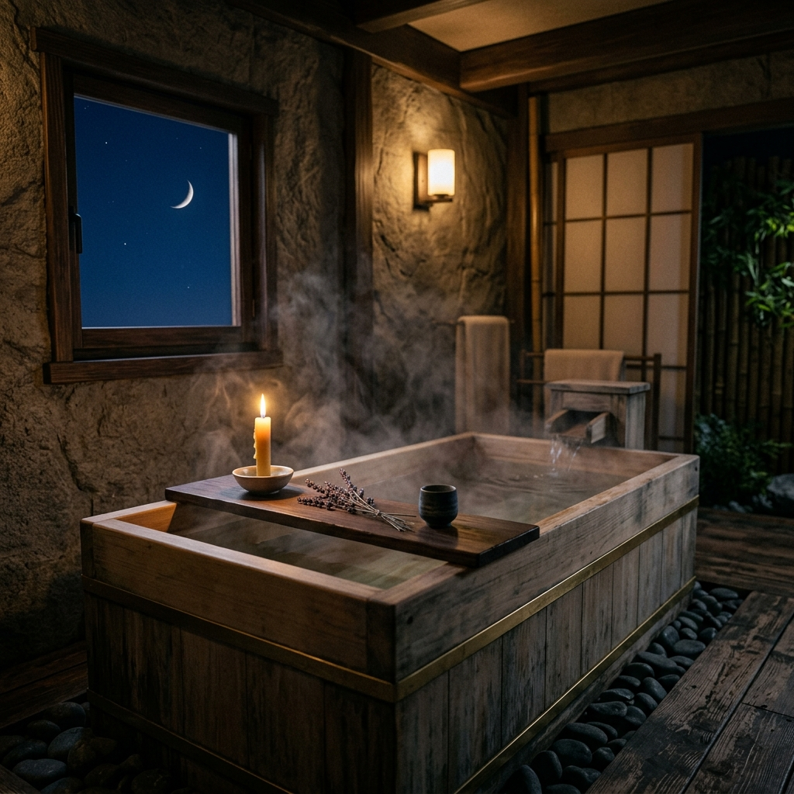
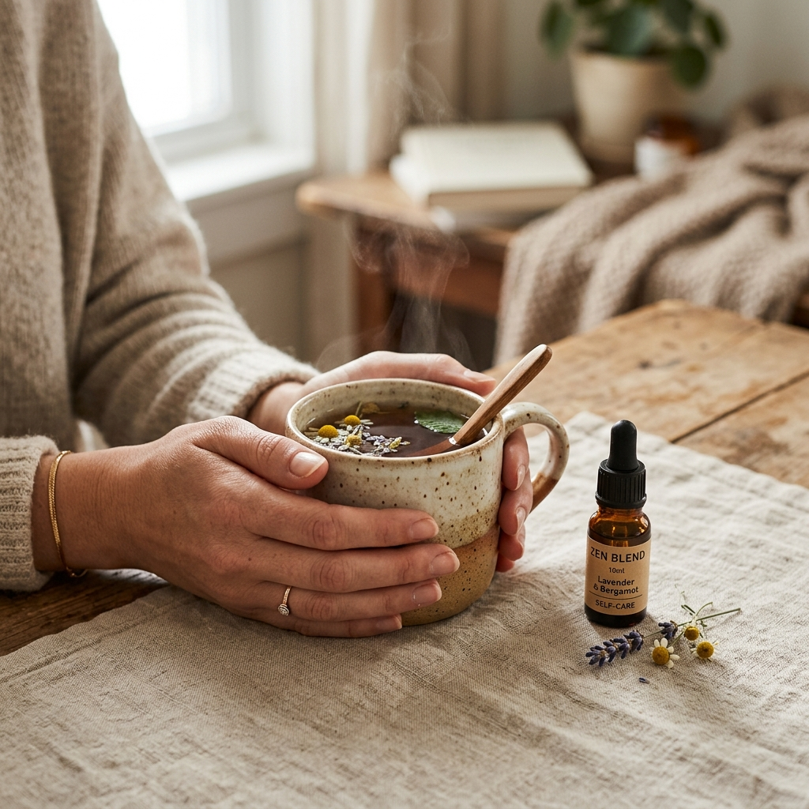

「冷え」と「疲れ」をリセットする夜の養生。生薬入浴剤で叶える、心穏やかなセルフケア習慣
2026.04.26
忙しい毎日を駆け抜けていると、自分の心の声や体の小さな悲鳴に気づかぬふりをしてしまうことがあります。「なんだか体が重い」「夜、なかなか寝付けない」……。そんなサインを感じたら、それはあなたが頑張りすぎている証拠かもしれません。
セルフケアブランド「fucuu（フクウ）」が大切にしているのは、植物のちからを借りて 'わたしに戻る' 時間 を作ること。ただ体を洗うだけの時間だったお風呂を、自分を慈しむための「養生の時間」へと変えてみませんか？
今回は、生薬とアロマを組み合わせた「温活」の魅力と、心まで「ふくふく」と満たされる夜の過ごし方についてお話しします。

湯気が立ち上るお風呂と、乾燥した生薬。窓の外には三日月が見える。
1. なぜ「生薬」なのか？植物が持つ、身体を芯から温める力
「養生（ようじょう）」という言葉を聞くと、少し難しく感じるかもしれません。しかし、その本質はとてもシンプルです。本来人間が持っている「健やかになろうとする力」を、自然の恵みを借りてサポートすること。その代表的なアイテムが「生薬」です。
市販の入浴剤には、色や香りを鮮やかにするための添加物が含まれていることも少なくありません。しかし、fucuuがこだわるのは 100%天然由来の生薬 です。厳選された植物の根、葉、果実をそのまま乾燥させて閉じ込めた生薬入浴剤は、お湯に溶け出す成分そのものがパワフルです。
例えば、血行を促進して体を芯から温める「トウキ」や、肌を健やかに整える「チンピ」など、古来より人々の健康を支えてきた植物たちが、お湯の中でゆっくりとその力を解き放ちます。化学的な刺激ではなく、自然の一部に包まれる感覚。それは、都会の喧騒で固まった心と体を、じわじわと解きほぐしてくれるはずです。
2. 頑張った自分を「ふくふく」と満たす、15分のバスタイム
「お風呂はさっと済ませてしまう」という方も多いかもしれません。しかし、温活において最も大切なのは、体の深部体温をしっかりと上げること。そのためには、38度〜40度のぬるめのお湯に、15分ほどゆっくりと浸かる のが理想的です。
fucuuの生薬入浴剤をお湯に入れると、自然な植物の色が広がり、国産アロマの優しい香りが浴室を包み込みます。この「香り」も大切なセルフケアの要素です。合成香料ではない、100%天然の精油の香りは、鼻から脳へとダイレクトに届き、自律神経のスイッチを「リラックス（副交感神経）」へと切り替えてくれます。
お湯の中で自分の呼吸に意識を向けてみてください。深く、長く、息を吐き出す。生薬の温もりと香りに身を委ねていると、いつの間にか「今日の失敗」や「明日の不安」が遠のき、ただ「今、ここにある自分」を感じられるようになります。この充足感こそが、私たちが提案したい「ふくふく」とした幸せの形です。

お風呂上がりに温かいハーブティーを飲みながら、自分を労わる時間。
3. 香りと温もりを逃さない。入浴後の「養生」ルーティン
お風呂から上がった後も、セルフケアの時間は続きます。せっかく温まった体が冷えてしまわないよう、入浴後の過ごし方にも少しだけ工夫をしてみましょう。
まずは、お風呂上がり30分以内に水分を補給すること。生薬の力で発汗が促されているため、常温の水や温かいハーブティーで優しく潤してあげてください。また、入浴によって柔らかくなった肌に、お気に入りのオイルやクリームで蓋をする時間は、自分自身の肌に触れ、愛着を持つ大切なひとときになります。
デジタルデバイスから離れ、部屋の明かりを少し落とす。生薬の余韻とアロマの残り香を感じながら布団に入れば、驚くほど深く穏やかな眠りが訪れるでしょう。翌朝、目覚めた時の体の軽さは、あなたが昨日、自分を丁寧にケアした証拠です。
Tips: 生薬入浴剤の効果を最大限に引き出すポイント
1. 揉み出しの儀式: お湯の中で生薬のパックを優しく揉んでみてください。植物の成分がより濃く溶け出し、香りも一層豊かになります。
2. デジタルデトックス: スマホはお風呂に持ち込まないのがfucuu流。目と頭を休ませることで、リラックス効果が何倍にも高まります。
3. 足元の保温: お風呂上がりはすぐに靴下を履くか、足元を冷やさないようにしましょう。温まった血液を全身に巡らせ続けることが大切です。
まとめ：自分を愛でる時間は、明日への活力になる
セルフケアは、決して贅沢なことではありません。それは、自分らしくあり続けるために必要な「儀式」のようなものです。無添加で100%天然の生薬とアロマにこだわるfucuuは、あなたの日常にそっと寄り添い、健やかな美しさを育むお手伝いをしたいと考えています。
「最近、自分に優しくできていないな」と思ったら、ぜひ今夜、お湯を張ることから始めてみてください。植物のちからを借りて、心も体もぽかぽかと。本来のあなたに戻る時間は、明日を少しだけ明るく照らしてくれるはずです。
fucuuとともに、心温まる夜をお過ごしください。